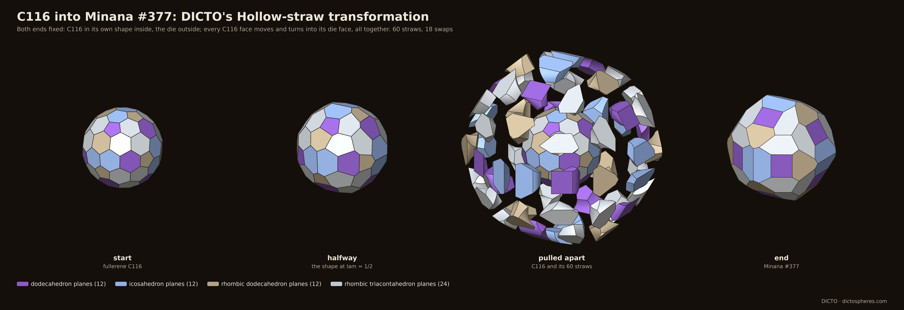
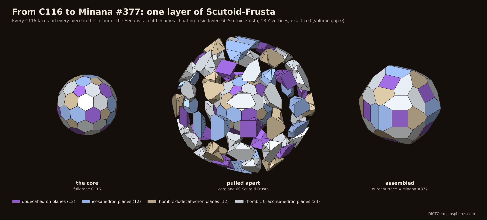

Both shapes fixed, every face moving into its partner: the fullerene grows into the die through one layer of Scutoid-Frusta, with exactly 18 neighbour swaps. Exact
Put a fullerene, a closed cage of pentagons and hexagons, inside a fair die. Let every face of the cage slide and turn toward its own face of the die, all at the same time, until the cage has become the die. Does the shape stay whole, and how often do neighbouring faces have to change partners on the way?
What is known, what is new. Fair dice of many shapes exist; DICTO's Aequi are fair dice built from the planes of the Platonic and Catalan solids (#105, #118). Fullerenes are the cages with 12 pentagons and otherwise hexagons; C116 alone has 1,207,119 forms (OEIS A007894). In living tissue, cells between two surfaces change neighbours on the way from one surface to the other, which makes them scutoids (Gómez-Gálvez et al. [1], who model the two surfaces by Voronoi diagrams of the same seeds). New here: DICTO's Hollow-straw transformation turns the fullerene C116 with symmetry Th, in its own shape, into the fair die Minana #377, through one layer of pieces. Each face of C116 moves and turns into its partner face of the die, all at once; every intermediate solid lies inside the next, so the regions the faces sweep, the straws, fill the space between the two shapes exactly; and the neighbours change by exactly 18 swaps (Theorem 1, exact). A short lemma tells when such a transformation works: exactly when every intermediate solid stays inside the die (Lemma 4).

Contributions: (1) the transformation and its exact certificate (Section 5); (2) the lemma that nesting means staying inside the die (Section 5); (3) the face pairings: the best symmetric one needs 30 swaps (Theorem 2), DICTO's floating resin finds one with 18 (Proposition 3); (4) the same method on the Goldberg cores C60, C80 and C140 with every catalogue Aequus of their face counts (Section 6, numerical).
The two shapes. Minana #377 is No. 377 of the Aequi catalogue: a fair die with symmetry Th and 60 faces, 12 squares, 12 heptagons and 36 hexagons, its faces on the planes of four solids (12 rhombic dodecahedron, 12 dodecahedron, 12 icosahedron and 24 rhombic triacontahedron planes). C116 is the fullerene with 116 corners and symmetry Th: 12 pentagons and 48 hexagons, 60 faces as well. Both have 174 pairs of neighbouring faces.
Face patterns and swaps. Pair the 60 faces of C116 with the 60 faces of the die. A neighbouring pair of C116 is kept when its two partners are neighbours on the die too. Where it is not, the pattern must change on the way: at some moment four faces meet at a point, two of them stop touching and the other two start. This is one swap; in the pattern of faces it is an edge flip, in foams the same exchange of four cells is the T1 process, and in fullerene chemistry, read on the carbon cage, it is the Stone–Wales transformation, the rotation of one bond [5]. Here the swaps happen continuously, inside a solid that grows from one fixed shape to another. Each swap gains one pair, so a pairing that keeps k of the 174 pairs needs at least 174 − k swaps. A straw that changes its side count on the way is a Scutoid-Frustum (DICTO's term for these solid pieces, #118; not the biological scutoid itself).
Theorem 2 (the best symmetric pairing). Exhaustive. Over all six ways to send C116's three 12-face orbits to the die's three 12-face orbits, and the 1536 pairings each that respect Th, at most 144 of the 174 neighbour pairs are kept. The best pairing needs exactly 30 swaps, no two of which touch a common corner, and doing all 30 gives the die's pattern exactly: one floor of swaps. The obvious pairing, pentagons to squares, keeps only 108 pairs and needs 90 swaps.
DICTO's floating resin lets C116 turn freely inside the die until its faces face theirs best: each face takes the die face it points to most nearly (an assignment problem, Kuhn's method), then C116 turns to fit that pairing best (orthogonal Procrustes), and the two steps repeat until nothing changes.
Proposition 3 (floating resin). Computed, best found. From 4000 random starting turns, 3751 states settle; the best keeps 156 of the 174 pairs. Its 18 swaps touch no common corner and give the die's pattern exactly: one floor. The state keeps 6 of the 24 symmetries (the group S6). A quadratic-assignment solver (Koopmans–Beckmann model, three hours) finds nothing better and proves that no pairing keeps more than 165 pairs, so the fewest swaps over all pairings lie between 9 and 18; this bound rests on the solver and is not certified here.
Write each face plane as a·x = 1, with the centre O inside both shapes. C116 sits inside the die in the floating-resin position, in its own shape; face k of C116 has plane ak and its partner face σ(k) of the die has plane mσ(k). DICTO's transformation moves all faces together:
ak(λ) = (1 − λ) ak + λ mσ(k), 0 ≤ λ ≤ 1,
and P(λ) is the solid the 60 moving planes enclose. P(0) is C116, P(1) is the die. The straw of face k is the region its face sweeps. Each face both moves and turns, so the walls between straws are swept surfaces, not flat.
Theorem 1 (C116 into Minana #377). Exact, computer-assisted. (a) P(0) has C116's pattern and P(1) the die's; all 60 faces are present at every λ. (b) The transformation is nested: on the whole life of every corner, each plane through it moves outward, so P(λ) only grows, and the 60 straws fill the space between C116 and the die without overlapping. (c) The pattern changes exactly 18 times, each change one swap of Proposition 3's floor: 6 at λ ≈ 0.7395 and 12 at λ ≈ 0.7589, each time isolated in an interval with rational ends.
The certificate. All numbers lie in ℚ(√5) and are handled exactly. A corner where planes k, a, b meet moves as N(λ)/det(λ), a quadratic over a cubic; it stays a corner while every other plane stays strictly on its side, a cubic condition. Every root in (0, 1] of these cubics is isolated exactly (norm to rational polynomials, Sturm sequences, sign changes of the cubic itself); between the roots the pattern cannot change, and each change is crossed at a rational λ where the new state is checked exactly. Following a moving configuration event by event in this way is the method of kinetic data structures (Basch, Guibas and Hershberger [2]). The inputs are exact as follows: C116's planes in its floating-resin position are rounded to rationals with denominators up to 109; Minana's planes use the catalogue's exact directions and its fair depths as 15-digit rational stand-ins, as in all exact work on the catalogue.
Lemma 4 (nested means inside the die). Proved. For any core, any die with the same number of faces and any pairing, the transformation is nested exactly when every P(λ) lies inside the die.
Proof. For x on face k of P(λ), (1 − λ) ak·x + λ mk·x = 1, so the rate at which face k moves at x is (mk − ak)·x = (mk·x − 1)/(1 − λ). The face moves outward at x exactly when mk·x ≤ 1, that is, when x lies on the die's side of the partner plane. If every P(λ) lies inside the die this holds everywhere, so the transformation is nested; if it is nested, every P(λ) lies inside P(1), the die. ∎

Remark (a variant, Claude's). Pressing C116's faces parallel to the die's instead gives flat-walled, convex straws: the weighted straight skeleton of the die (Aichholzer et al. 1995; Eppstein and Erickson 1999; Aurenhammer 2008; Barequet et al. 2008; Aurenhammer and Walzl 2016). The core then keeps only C116's face pattern, not its shape, so it is not DICTO's transformation and is not used here.
The method needs only a core, a die with the same number of faces, and a pairing. We ran it, in floating point, on the Goldberg polyhedra C60 (32 faces), C80 (42 faces) and C140 (72 faces) with every die of the catalogue's first 1232 that has the same face count (14, 28 and 28 dice), the pairing found by the floating resin, and the core scaled so that its circumradius is a fixed fraction ρ of the die's inradius.
| core | dice | nested at ρ = 0.5 | at 0.7 | at 0.9 | largest nested ρ |
|---|---|---|---|---|---|
| C60 | 14 | 14 | 13 | 10 | 0.66 to 0.99 |
| C80 | 28 | 28 | 28 | 14 | 0.75 to 0.99 |
| C140 | 28 | 28 | 28 | 11 | not run |
All 70 pairs are nested with the core at half the die's size, and every pair tested for its threshold (the 42 of C60 and C80) is nested for every smaller core. By Lemma 4 a larger core fails when an intermediate solid bulges out through a face of the die. Whether the changes are exactly the needed swaps depends on the die: it fails mainly when some corners of the die are met by four or more faces, where the pattern changes by more than swaps.
Conjecture 5. For every pairing of a core with a die there is a core size below which DICTO's transformation is nested.
We set out to turn a fullerene into a fair die through one layer of pieces. DICTO's Hollow-straw transformation does it for C116 and Minana #377, exactly, with 18 swaps; nesting is equivalent to staying inside the die; and the method carries over to every Goldberg core and die we tried once the core is small enough. Open: whether fewer than 18 swaps are possible (the bound is 9); exact certificates for the other pairs; Conjecture 5; and which pairings make only the needed swaps.
Gómez-Gálvez et al. 2018 (opened); Basch, Guibas, Hershberger (preprint opened); OEIS A007894 (opened); Wikipedia, “T1 process” (opened; the foam books it cites not opened). For DICTO's construction (searches 27 November on morphing convex polyhedra, parametric polytopes, and continuous fullerene paths): the nearest is A. Kaul and J. Rossignac's solid-interpolating deformations [6], which blend two convex polyhedra as Minkowski combinations (support functions interpolated, no chosen pairing of faces); A. Shapiro and A. Tal, “Polyhedron realization for shape transformation”, interpolate vertices after merging the two edge structures (record only); parametric polytopes in the literature (e.g. Berline and Vergne) keep the facet directions fixed; fullerene isomerisation paths are combinatorial (Stone–Wales moves) or minimum-energy atomic paths. None moves each face plane into a chosen partner plane of another fixed polyhedron. Kaul–Rossignac: abstract read; Stone–Wales: cited from records, not opened. Searched 27 November 2026; a full search is due before release.
Study 2026-11-24-aequi-vacuus-scutoids: c116_orbitpairs.py, c116_onefloor.py, c116_float.py (Theorem 2, Proposition 3); c116_transform.py and c116_transform_exact.py with logs and data/c116/transform_exact.json (Theorem 1); render_transform.py, render_aequi.py, app_data.py (figures, the page). Study 2026-11-27-hollow-straw-criterion: hs_general.py, analyse.py, logs and data (Section 6, Lemma 4).
[1] P. Gómez-Gálvez et al., Scutoids are a geometrical solution to three-dimensional packing of epithelia, Nature Communications 9 (2018) 2960.
[2] J. Basch, L. J. Guibas, J. Hershberger, Data structures for mobile data, J. Algorithms 31 (1999) 1–28.
[3] T. C. Koopmans, M. Beckmann, Assignment problems and the location of economic activities, Econometrica 25 (1957) 53–76.
[4] DICTO, Aequi catalogue (#105, #118); Scutoid-Frusta (#118). DICTO DOIs on dictospheres.com.
[5] A. J. Stone, D. J. Wales, Theoretical studies of icosahedral C60 and some related species, Chem. Phys. Lett. 128 (1986) 501–503.
[6] A. Kaul, J. Rossignac, Solid-interpolating deformations: construction and animation of PIPs, Computers & Graphics 16 (1992) 107–115; first in Eurographics 1991 Technical Papers, 493–505, doi:10.2312/egtp.19911037 (abstract read: PIPs between any initial and final polyhedra, by Minkowski sums).